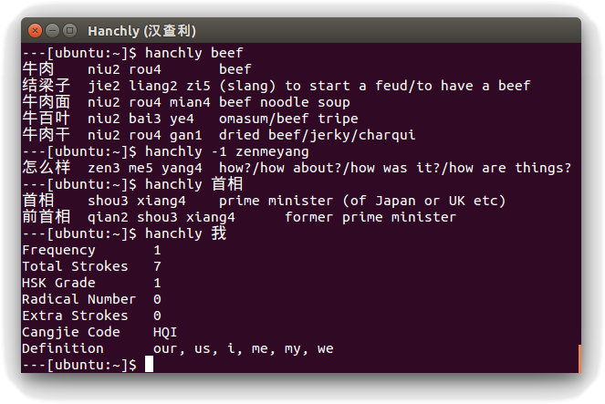

*hanchly 汉查利
A command-line Chinese dictionary
Hanchly is a simple Linux command-line dictionary written in C and based on CEDICT and the Unihan database. Character sorting is based on research by Jun Da
Hanchly source code is released under a permissive license, but in accordance with the license terms of the aforementioned data sources may only be used for personal/research/educational purposes
To install from source:
$ git clone https://github.com/ohwgiles/hanchly.git
$ mkdir -p path/to/build && cd path/to/build
$ cmake path/to/source -DCMAKE_BUILD_TYPE=Release
$ make
$ mkdir -p path/to/build && cd path/to/build
$ cmake path/to/source -DCMAKE_BUILD_TYPE=Release
$ make